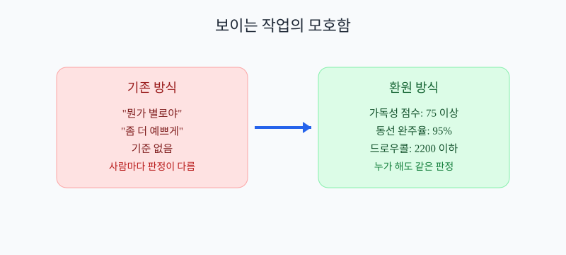

감성 스타일을 숫자로 재면 진짜 도움이 될까?
스타일 유사도, 팔레트, 구도 지표로 합의 속도를 올리는 방법
감성 피드백을 숫자로 번역하기
감성은 방향이고, 지표는 합의 속도야. 둘을 분리해야 팀이 빨라져.
핵심: 추상 판단을 기준어와 지표로 쪼개면 초보자도 바로 실행할 수 있어.
취향은 다르지만 프리셋 값이 있으면 결과가 크게 흔들리지 않아.
시각화: 문제를 구조화하는 시작점

모호한 목표를 구조화하면 에이전트가 같은 방향으로 움직인다.
스타일 측정 용어 카드
아래 용어 카드에서 각 개념을 정의 → 필요 이유 → 미사용 리스크 순서로 읽으면 된다.
이 순서가 정리되면 직무가 달라도 같은 문장으로 대화할 수 있다.
스타일 유사도 (Style Similarity)
정의: 목표 레퍼런스와 결과 화면이 닮은 정도
왜 필요: 감성 피드백을 비교 가능한 값으로 만들려고
없으면: 리뷰가 추상적 말싸움으로 길어짐
팔레트 거리 (Palette Distance)
정의: 색상 분포가 기준 팔레트에서 벗어난 정도
왜 필요: 톤앤매너 일관성을 유지하려고
없으면: 장면마다 색감이 따로 놀게 됨
구도 일치율 (Composition Match)
정의: 주 피사체와 시선 흐름 배치 일치율
왜 필요: 화면 읽기 흐름을 안정화하려고
없으면: 시선이 분산되어 몰입이 떨어짐
시각화: 용어 정렬 이후

용어 오해가 줄어들면 수정 요청의 왕복이 줄어든다.
스타일 판정 지표
처음엔 5개 내외가 좋아. 너무 많으면 운영이 무거워져.
측정 가능 + 행동 연결 가능 조건을 충족하는 지표만 남겨야 실제로 굴러간다.
- 스타일 유사도: 형태/재질/톤 종합 유사도 점수 (목표: 0.80 이상, 미달 시: 레퍼런스 샘플 재정의)
- 팔레트 거리: 대표 색상 분포 차이 값 (목표: 0.15 이하, 미달 시: 조명/후처리 파라미터 보정)
- 구도 일치율: 핵심 오브젝트 배치 규칙 만족률 (목표: 90% 이상, 미달 시: 카메라 앵커 재고정)
- 명도 대비 점수: 주 피사체와 배경 대비 적정성 (목표: 기준 범위 유지, 미달 시: 콘트라스트 레벨 조정)
- 리뷰 리드타임: 한 장면 리뷰 종료까지 시간 (목표: 15분 이하, 미달 시: 리뷰 체크리스트 단순화)
시각화: 지표 기반 판정 루프

지표는 보고용 숫자가 아니라 다음 행동을 정하는 기준이다.
수정 루프 운영법
아래 순서를 그대로 작업 티켓으로 나눠 실행하면 된다.
각 단계 완료 시 지표를 다시 측정해서 통과 여부를 확인한다.
- 레퍼런스 120장 태그 분류
- 지표 5개 임계값 정의
- 생성 결과 자동 채점
- 미달 장면 자동 수정 요청
- 통과 장면만 스타일 라이브러리 반영
시각화: 실행 루프가 고정된 상태

순서가 고정되면 에이전트가 밤에도 같은 리듬으로 협업한다.
빠른 실습 루트
| 주차 | 학습/실행 | 산출물 |
|---|---|---|
| 1주차 | 스타일 요소 분해 | 스타일 체크리스트 |
| 2주차 | 유사도/팔레트/구도 기준화 | 채점 기준표 |
| 3주차 | 자동 채점 도구 연결 | 스타일 대시보드 |
| 4주차 | 리뷰 시간 단축 실험 | 회고 리포트 |
📌 핵심 정리
- 스타일 지표는 감성을 죽이는 게 아니라 합의를 빠르게 함
- 유사도/팔레트/구도 3축을 먼저 고정하면 흔들림이 줄어듦
- 리뷰 시간을 KPI로 잡으면 피드백 품질이 올라감
- 통과 장면 라이브러리화로 다음 작업 속도가 빨라짐